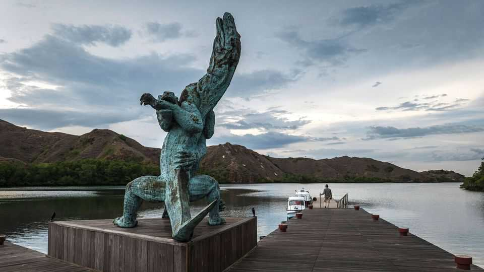

A huge increase in tourists visiting Komodo brings new dangers
There are calls for more restrictions

Oct 1st 2026
IT HAS SURVIVED ice ages, droughts and cyclones, but whether the Komodo dragon can survive mass tourism is not yet known. In recent years Komodo island, along with its supply base of Labuan Bajo on the nearby and much bigger island of Flores, has been at the sharp end of Indonesia’s drive to expand its tourism industry. Joko Widodo, Indonesia’s president until two years ago, said that he wanted to create “ten new Balis”, aiming to bring more jobs and high incomes to his country. Bali has long been Indonesia’s top tourist destination, bringing in vast amounts of foreign exchange and providing jobs to Balinese and to migrant workers from across the country.
High on Mr Widodo’s list was Labuan Bajo and beyond it the Komodo National Park. After all, it boasts a unique tourist attraction, the Komodo dragon, an enormous lizard that can grow to ten feet (three metres) long, weigh 80kg, and lives only on Komodo and a few smaller nearby islands. Only an estimated 1,300 adult “land crocodiles”, as some call them in Indonesia, are thought to survive.
Economically, it has worked. Labuan Bajo now throngs with diving shops, restaurants, hotels and coffee spots. Its port sends daily boatloads of enthusiastic tourists to Komodo (which has no airport of its own and can be reached only by sea), and its surrounding waters and islands.
But last December the park, and its visitors, got a nasty shock. Four Spanish tourists, including Fernando Martín, a football coach with the club Valencia CF, and three of his children, died when their boat sank in rough seas while on a tour. The incident prompted a temporary closure. Mr Widodo’s plan has been just too successful, says Sisilia Lenita Jemana, a marketing manager for the Labuan Bajo Flores Tourism Authority, a body set up to implement the ex-president’s ideas. The region is struggling to cope with phenomenal growth. In 2025 there were more than half a million visits to the area, up by 21% on the year before. The number has increased fivefold in a decade.
Ms Jemana’s organisation had long urged the maritime authorities and national park authority to limit access, particularly in the dangerous wet season, she says. The deaths in December caused widespread dismay. “If the weather is not conducive, they should not give permission to sail,” says Ms Jemana.
Her organisation has been looking at other tourist attractions to promote, such as sites linked to Portuguese traders and missionaries who settled in the island in the 16th century and the discovery there, around 20 years ago, of remains of Homo floresiensis, the extinct “Hobbit man” that is a relative of modern humans. Flores has other national parks, and active volcanoes. But at the end of the day, the tourists want to see the dragons.
Unfortunately, many of them don’t know how to behave once there. Some get too close to an animal that may lounge around sleepily, but which can be aggressive and has been known to attack humans. It also has a nasty, venomous bite. Earlier this year Komodo introduced an initial cap of 1,000 tourists a day. With luck, the dragons will be mollified. ■
For exclusive coverage of Asian politics, economics and security, sign up to Asia Bulletin, our weekly subscriber-only newsletter.